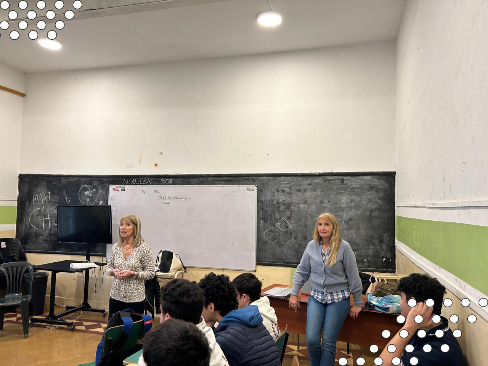
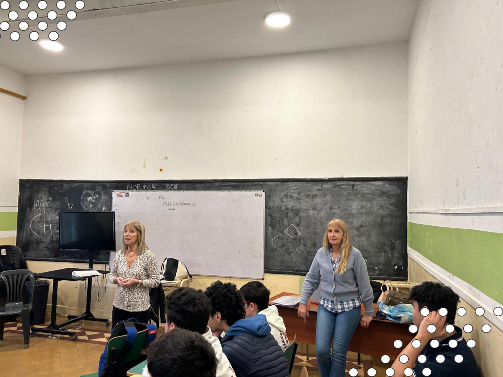

Junto con todos los chicos de 5to A y B participamos en una charla dada por la licenciada Mónica Tsalta , la cual es una coach ontológica que nos vino a hablar de distintas cosas que buscan las grandes empresas, y que nos va a ayudar para cuando nosotros tengamos que hacer nuestros currículums y salir a buscar trabajo. Nos contó que gracias al gran avance de las inteligencias artificiales, estos últimos años lo más importante y lo que buscaban las empresas en las entrevistas de trabajo eran personas con habilidades ¨blandas¨ (las cuales son esas habilidades que están relacionadas con la inteligencia emocional, el pensamiento crítico, el liderazgo o la resiliencia), ya que las habilidades ¨duras¨ la mayoría ya estaban tomadas por las computadoras. Además nos habló sobre la importancia de saber comunicarse, de los líderes de grupo y las cualidades que hacen que nos destaquemos en alguna actividad o grupo. Hicimos un juego que consistía en que había dos grupos, de cuatro personas cada uno, y en el piso enfrente de cada grupo dos hojas conformadas con cuatro hojas A4 pegada de papel. Esto se realizo para ver como trabajan en equipo. Ambos equipos terminaron lograndolo excitosamente
 
